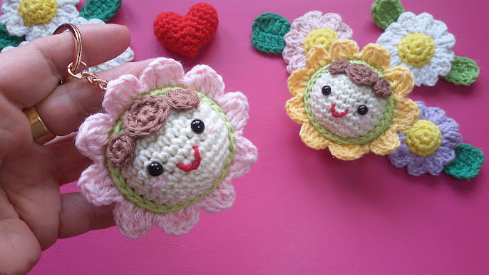
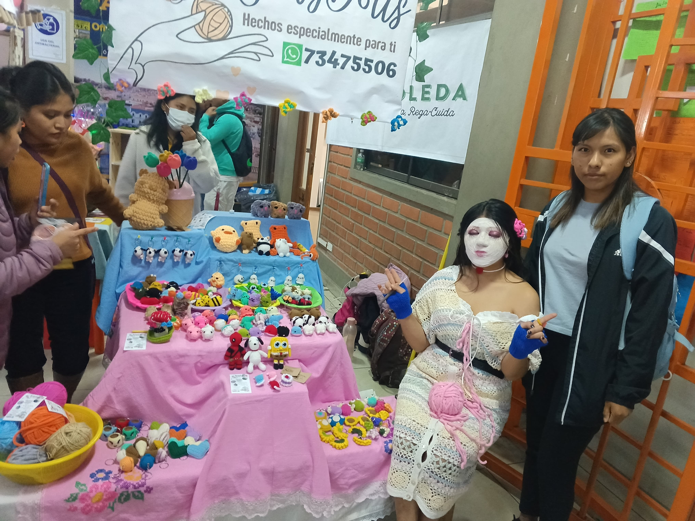
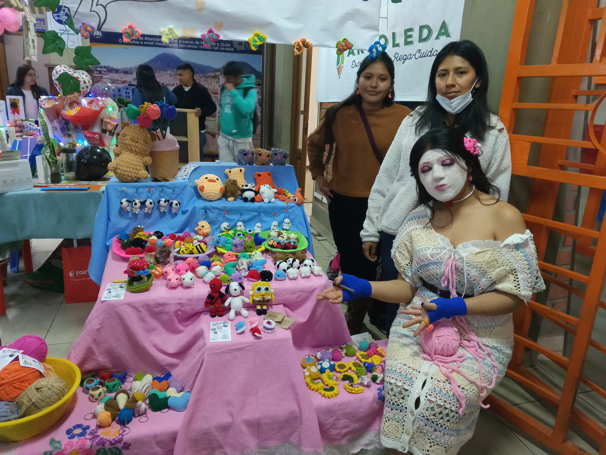

Video del Emprendimiento
En el video se explica cómo empezó el emprendimiento y se muestran los diferentes modelos elaborados con crochet.
CROCHET
Imágenes del Producto



Los llaveros y muñecos tejidos son hermosos, decorativos y muy creativos. Pueden usarse para adornar mochilas, guardar llaves o decorar cualquier espacio, dando un toque artesanal y colorido.